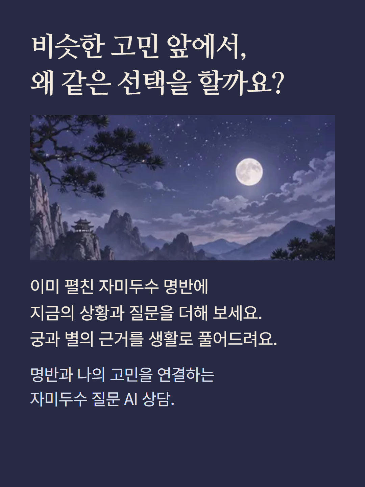
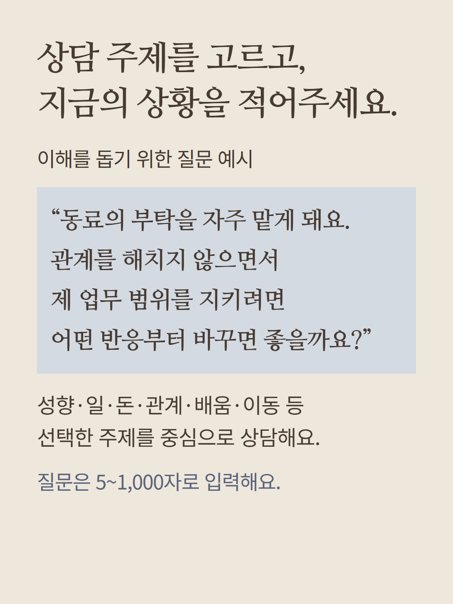
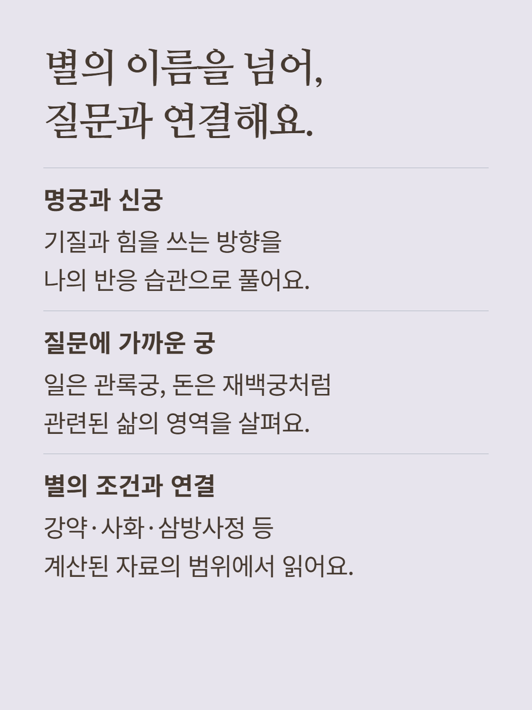
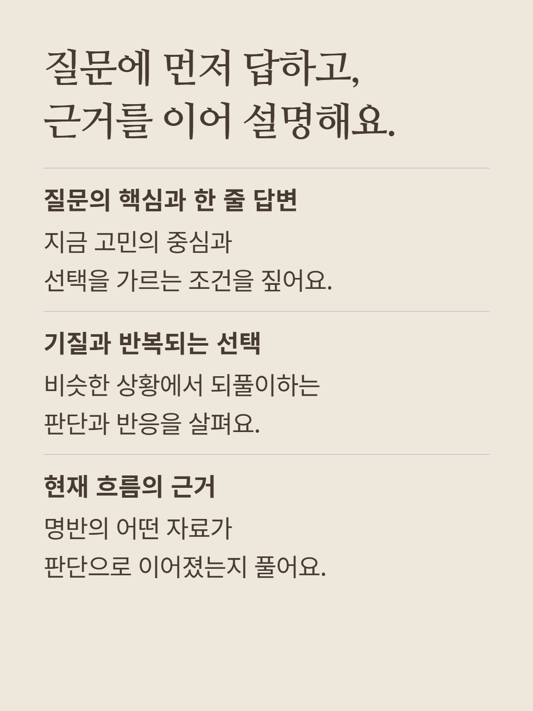
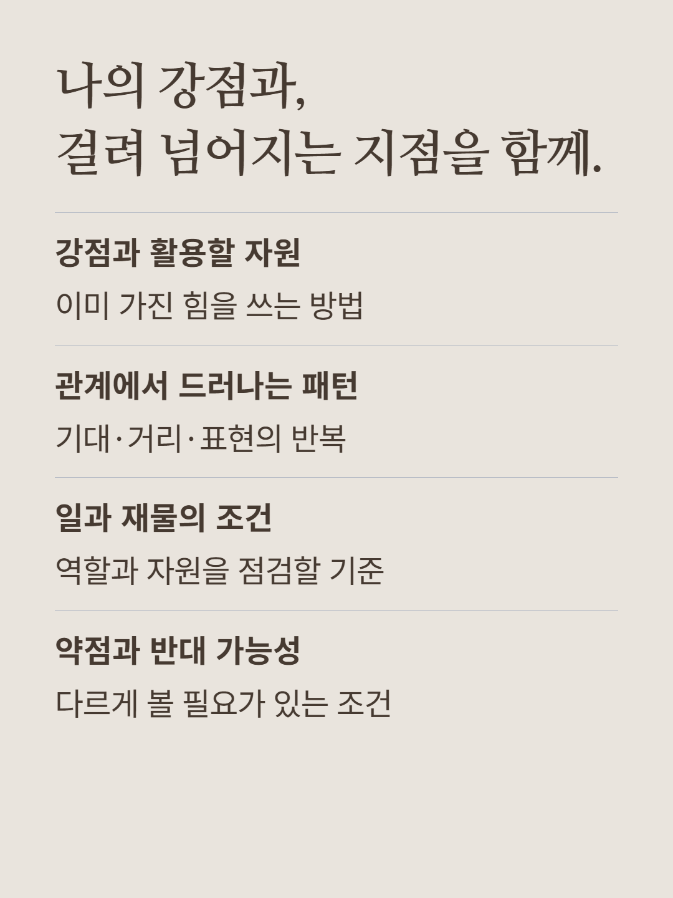
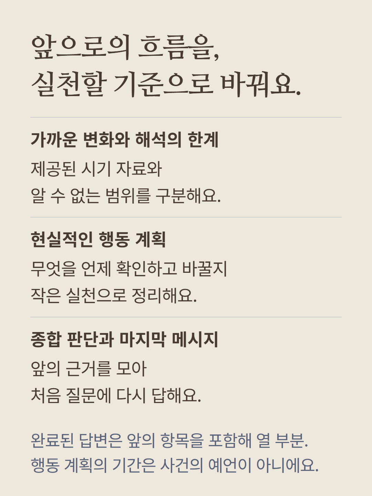
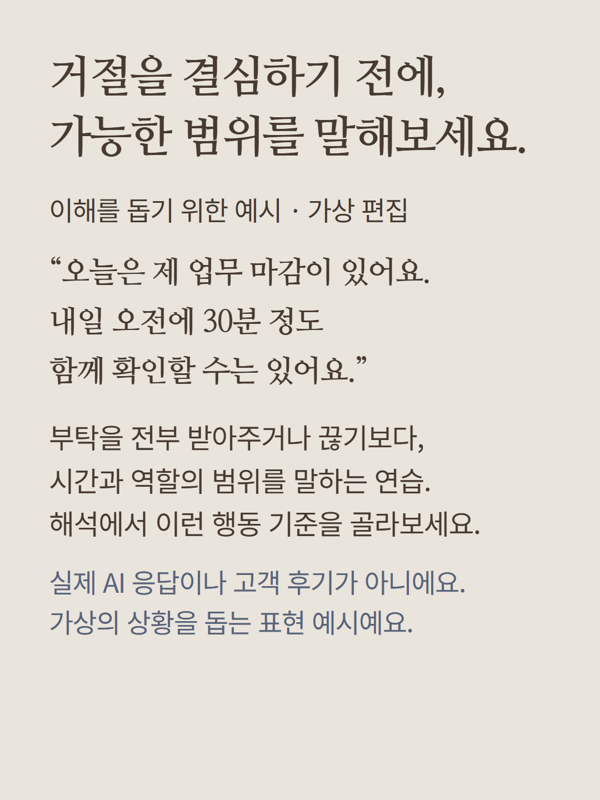
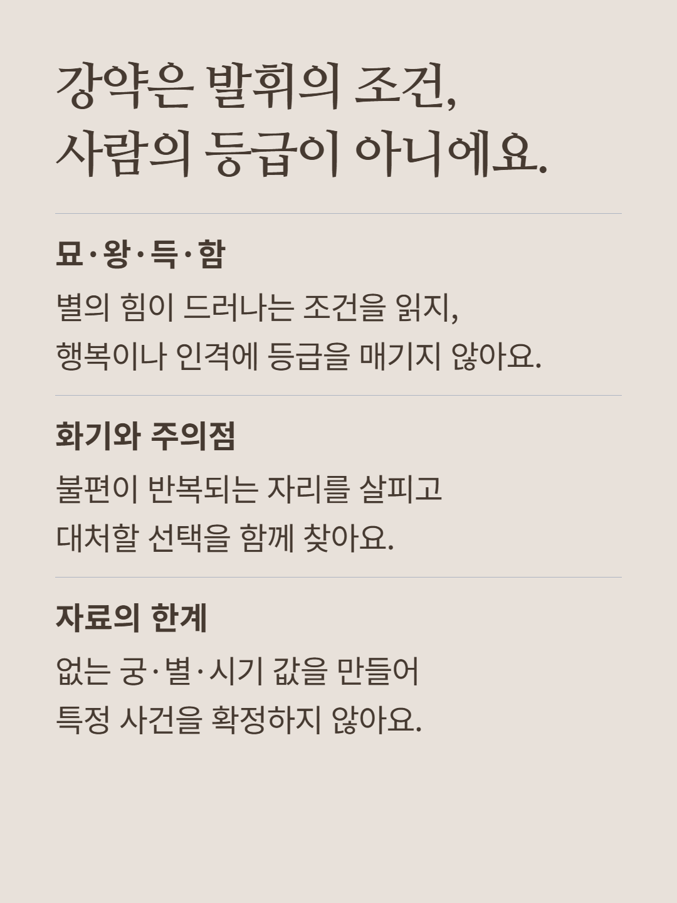
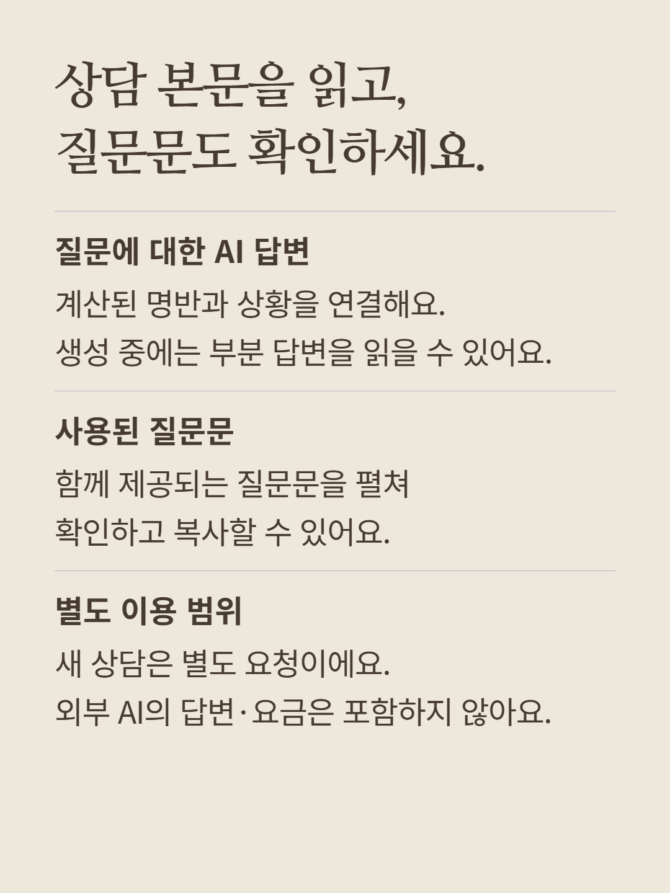
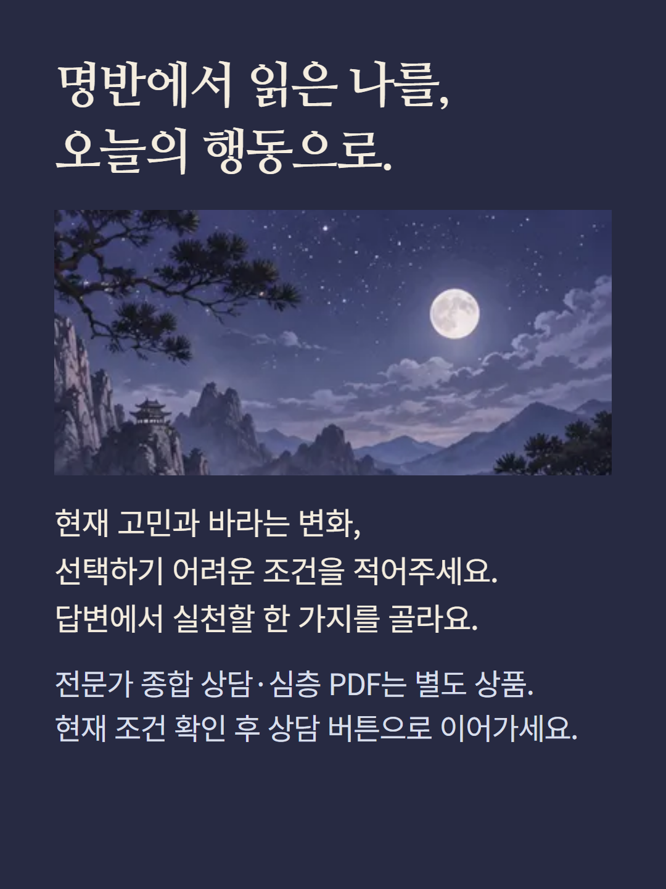

이미 계산된 자미두수 명반과 선택한 상담 주제,5~1,000자의 질문을 바탕으로 AI가 해설합니다. 명궁·신궁·질문에 관련된 궁과 별·강약·사화·삼방사정·제공된 시기 자료를 사용합니다. 완료 답변은 질문 핵심,기질,현재 근거,강점,관계 패턴,일과 재물,약점과 반대 가능성,가까운 변화와 시기 해석의 한계,행동 계획,종합 판단의 열 부분으로 구성되며 생성 중에는 완성된 부분부터 표시될 수 있습니다. 상담에 쓰인 질문문을 펼쳐 확인하고 복사할 수 있습니다. 새 상담은 별도 요청이며 무제한 후속 대화가 아닙니다. 외부 AI 답변·이용 요금은 포함하지 않습니다. 별의 강약은 발휘 조건에 대한 해석이지 인격·행복의 등급이 아닙니다. 자료가 없는 시기나 사건,상대의 마음을 확정하지 않습니다. 전문가 종합 상담·심층 PDF·궁별 해금은 별도 상품입니다. 예시는 이해를 돕기 위한 가상 편집이며 실제 AI 응답이나 고객 후기가 아닙니다. 이미지는 분위기 연출이며 실제 명반이 아닙니다. 현재 결제 조건을 확인해 주세요.